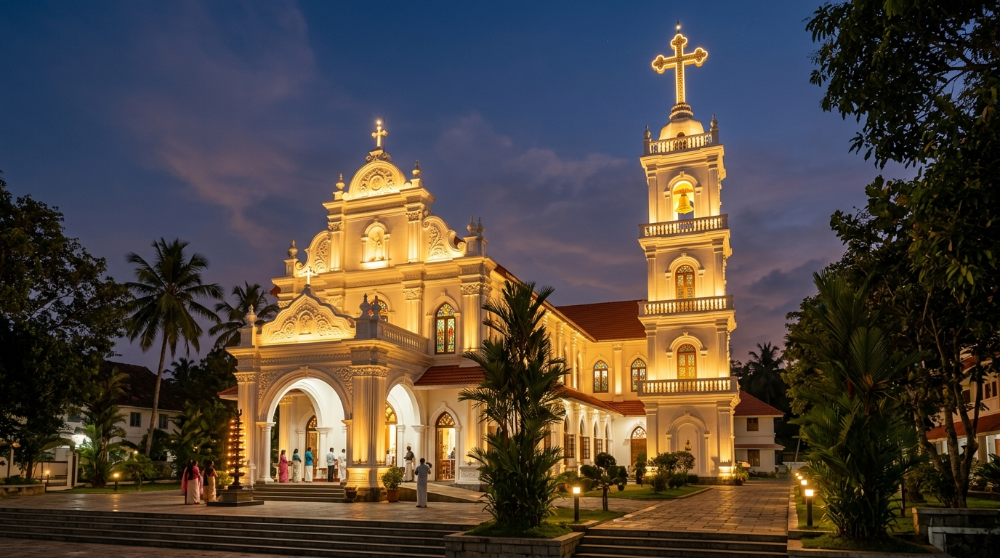
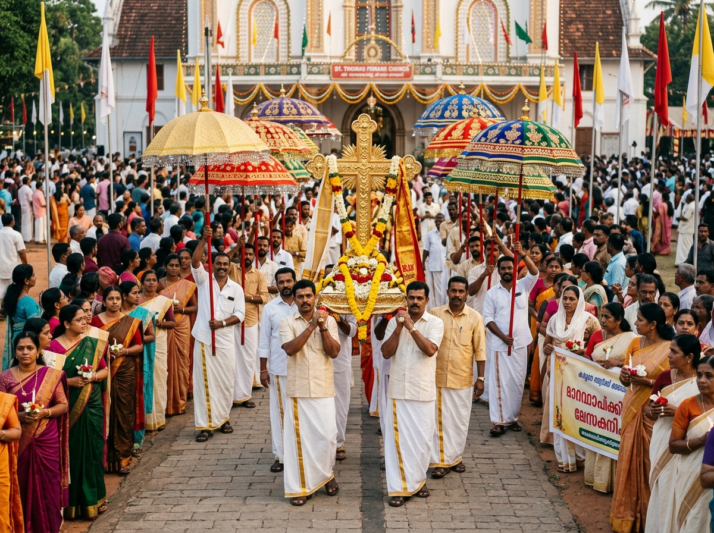
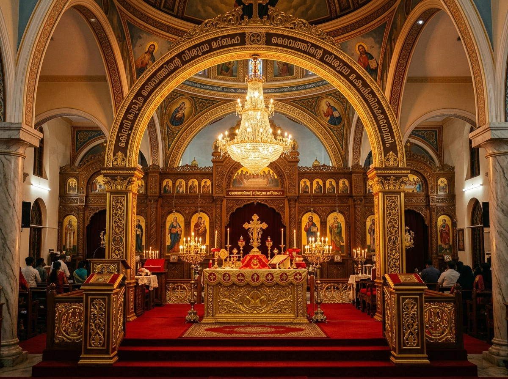

Parish Committee
ഇടവക കമ്മിറ്റി & പാരിഷ് കൗൺസിൽ (Parish Council & Administration)
"Faithful Stewardship, Ecclesial Unity, and Transparent Pastoral Governance"
Presidential Address
Message from the President & Vicar
Guiding parish life in synergy with the elected lay leadership and pastoral council
Governing Council 2026–2027
Executive Committee & Council Members
Elected lay leaders and organization heads serving the parish community
Adv. Thomas Kurian
Parish Trustee (Kaikkaran)
Finance & Assets
Prof. Sunny Jacob
Parish Secretary
Administration
Sri. George Mathew
Joint Trustee
Accounts & Property
Sri. Mathew Philip
Joint Secretary
Records & Registry
Sri. Varghese Daniel
Catechetical Director
Faith Formation
Thomas Daniel
MCA President
Men's Apostolate
Marykutty Abraham
MCMF President
Women's Apostolate
Jerin Mathew
MCYM President
Youth Apostolate
Sri. Philipose Mathai
SSVP President
Charity Relief
Sri. V. C. Mathai
Prayer Groups Coordinator
Ward Fellowships
Smt. Annamma Mathew
Women's Representative
Pastoral Council
Sri. Babu K. John
Maintenance Convenor
Building & Projects
Governance & Stewardship
Activities & Photo Gallery
General assembly assemblies, feast coordination, community welfare, and church development

General BodyAnnual Parish Assembly
Parishioners and council reviewing the annual financial statement and development roadmap.

Feast PlanningPatronal Feast Planning
Council leaders orchestrating liturgy, security, refreshments, and religious processions.

ConsecrationCouncil Consecration
Elected council members making their solemn oath of office before the Madbaha altar.
 Endowments
Endowments
Community Welfare Fund
Supervising medical aid funds, educational scholarships, and benevolent support for parishioners.